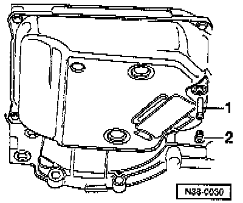
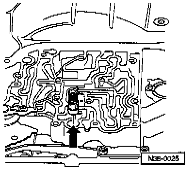
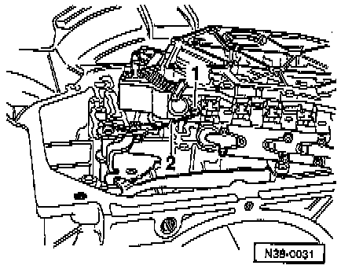

Fluid Pan: Service and Repair

COMPONENT NOTES AND INFORMATION
CAUTION: Do not run the engine or tow the vehicle with the oil pan removed or when there is no ATF in the transmission.
NOTE:
^ The valve body or the conductor strip can also be removed when the gearbox is installed.
^ The conductor strip can be removed individually.
Remove the starter motor on vehicles with V6 engine to remove the conductor strip.
^ After re-installing the oil pan, fill with ATF, refer to Topping Up Transmission oil.
^ Always replace a valve body which is fouled or faulty.
1 Plug
- Always replace seal, refer to Fig. 2, below.
- Checking ATF level and topping-up, refer to Topping Up Transmission oil.
2 Overflow tube
- Remove to drain ATF, refer to Fig. 1, below.
- Thread in to stop Checking ATF level and topping-up, refer to Topping Up Transmission oil.
3 Oil pan
4 Bolt
- Tighten to: 12 Nm (9 ft lb)
5 Magnet
- Install in recess in oil pan
6 Spacer bushing
- Press into gasket
7 Gasket
- Always replace
- Press spacer bushings into gasket
8 ATF screen
- Installing, refer to Fig. 10
9 Bolt
- Tighten to: 5 Nm 144 inch lb)
10 Gasket
- Always replace
- Install in valve body
11 Valve body
- Removing, refer to Fig. 4, below.
- Installing, refer to Fig. 9, below.
- Marking, refer to Fig. 6, below.
- Installing seal-item 10-
12 Bolt
- Tighten to: 10 Nm (7 ft lb)
13 O-ring
- For wiring transition piece
- Always replace
14 Conductor strip With wiring transition piece and connector
- Can be removed and installed with transmission installed
- Remove solenoid valves with 3373, refer to Fig. 3, below.
15 Clip
16 Wiring connector
- Attach to transmission housing
17 Clip Insert lug of wiring connector in recess of clip
18 Nut
- Tighten to: 10 Nm (7 ft lb)
19 Plug for solenoid valves
- Remove solenoid valves with 3373, refer to Fig. 3
20 Sealing plug
- Take out before removing and installing free wheel
- Install so that lug is located in groove on housing, refer to Fig. 5, below.
- Place O-rings onto sealing plug
21 O-ring
- Always replace
22 O-ring
- Always replace
23 Operating rod for manual selector valve
- Unhooking, refer to Fig. 4, below.
- Install with stepped side facing manual selector valve, refer to Fig. 7, below.
- Adjusting, refer to Fig. 8, below.
PROCEDURES

Fig. 1 ATF, draining
- Place container under transmission.
- Remove plug -2-.
- Remove overflow tube -1- and allow ATF to drain.
- Thread overflow tube in to stop.

Fig. 2 Plug seal, replacing
- Cut open seal -arrow- with side cutters.
- After repairs install new seal to plug and thread in hand tight to fill with ATF.
- Pour in 3 liters of ATF then check ATF level and top-up, refer to Topping Up Transmission Oil.

Fig. 3 Conductor strip, removing
- Place 3373 onto stop under solenoid valve plug.
- Pull plug off with 3373 in direction of arrow.
- Remove bolt-1-.

Fig. 4 Valve body, removing and unhooking operating rod
- When removing the valve body the manual selector valve -1- remains in valve body.
- Pull manual selector valve out until it is just possible to unhook operating rod -2-.
- Secure manual selector valve so that it cannot fall out.

Fig. 5 Sealing plug, installing
- Pull sealing plug out of housing before removing and installing free wheel or sealing plug and O-ring will be damaged.
- Install Wrings to sealing plug.
- Install sealing plug in hole in transmission housing -arrow-.

Fig. 6 Valve body, identification
- Code letters are stamped on a metal tab. Metal tab must remain on valve body.
- Allocation of valve body's/transmissions. Application and ID

Fig. 7 Operating rod, unhooking from manual selector valve
- Turn manual selector valve -1- so that shoulder is to operating rod.
- Guide operating rod -2- with manual selector valve into valve body.

Fig. 8 Operating rod for manual selector valve, adjusting
- Move selector shaft to position "P".
- Push operating rod with manual selector valve into valve body up to stop (direction of arrow) and tighten bolt to 4 Nm (35 inch lb).
NOTE:
^ Manual selector valve must always be resting against the stop.
^ Counter-hold in direction of arrow when tightening bolt.
^ Always replace bolt and manual selector valve retaining clip.

Fig. 9 Valve body, installing
- Route conductor strip as illustrated, when installing do not kink or twist.
NOTE: When installing do not kink or twist the conductor strip.

Fig. 10 ATF screen, installing
- Before installing ATF screen install seal in valve body.
- Firmly press ATF screen onto valve body.